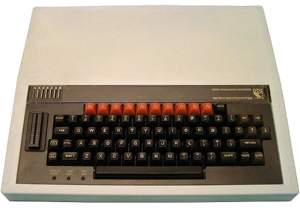

Conversational
Assembly
Matt Godbolt
@mattgodbolt
YOW Tool Time
21st October 2020
Hello!
Journey


Backstory
int sum(const vector<int> &v) {
int result = 0;
for (size_t i = 0; i < v.size(); ++i)
result += v[i];
return result;
}
int sum(const vector<int> &v) {
int result = 0;
for (int x : v)
result += x;
return result;
}Is one better than the other?
WARNING
- Reading assembly alone can be misleading
- Always measure too
- Google Benchmark
- quick-bench.com
Conversational x86

Ssolbergj, Wikimedia Commons CC
SA 4.0
Instructions
instr
instr dest_operand
instr dest_operand, source_operand
instr dest_operand, source_operand, source_operand
ret ; return
inc rax ; increment "rax"
mov edx, 1234 ; set "edx" to the value 1234
add rsi, rdi ; "rsi" += "rdi"
vpaddd ymm1, ymm2, ymm0 ; "ymm1" = "ymm2" + "ymm0"
Top 20 Instructions
movmovzxmovsxdlea
callretjmp
pushpop
cmptestjejne
andxoraddsubshlshrsar
jmp/je/jne == GOTO
Registers
rax,rbx,rcx,rdx,rsp,rbp,rsi,rdi,r8-r15xmm0-xmm15,ymm0-zmm15,zmm...rdi,rsi,rdx... arguments (SYSV ABI)raxis return value
Registers are Globals
Registers
| 63 ... 32 | 31 ... 16 | 15 ... 8 | 7 ... 0 | ||||
|---|---|---|---|---|---|---|---|
| rax | |||||||
| (zeroed on write) | eax | ||||||
| (preserved on write) | ax | ||||||
| (preserved on write) | ah | (prsvd) | |||||
| (preserved on write) | al | ||||||
And so on for
rdi,
rsi,rcx...
Operands
register ; e.g. rax, rbx, ecx...
constant ; e.g. 1234
<size> ptr [register] ; e.g. DWORD PTR [rax]
<size> ptr [register + offset] ; e.g. BYTE PTR [rcd + rsi]
<size> ptr [register + offset + register2 * (1,2,4,8)]
mov eax, dword ptr [rdi + 12 + rsi * 4]
; eax = *(int *)(rdi + 12 + rsi * 4)
add eax, dword ptr [rdi + 12 + rsi * 4]
; eax += *(int *)(rdi + 12 + rsi * 4)
lea eax, [rdi + 12 + rsi * 4] ; eax = (rdi + 12 + rsi * 4)
Summary
- Registers:
rax,rbx,rcx... - Params:
rdi,rsi,rdx,rcx... - Result:
rax op dest, srcdest,srcare registers or memory
Where were we?
int sum(const vector<int> &v) {
int result = 0;
for (size_t i = 0; i < v.size(); ++i)
result += v[i];
return result;
}
int sum(const vector<int> &v) {
int result = 0;
for (int x : v)
result += x;
return result;
}Which is better?
Demo
/// g83:-O2 -march=skylake -std=c++2a -Wall -Wextra -pedantic
// setup
#include <numeric>
#include <vector>
using namespace std;
int sum(const vector<int> &v) {
int result = 0;
for (size_t i = 0; i < v.size(); ++i)
result += v[i];
return result;
}Walkthrough
int sum(const vector<int> &v) {
; rdi = const vector<int> *
mov rdx, QWORD PTR [rdi] ; rdx = *rdi ≡ begin()
mov rcx, QWORD PTR [rdi+8] ; rcx = *(rdi+8) ≡ end()
template<typename T> struct _Vector_impl {
T *_M_start;
T *_M_finish;
T *_M_end_of_storage;
};
Traditional
Range
sub rcx, rdx ; rcx = end-begin
mov rax, rcx
shr rax, 2 ; (end - begin) / 4
je .L4 ; size == 0? skip
add rcx, rdx ; rcx = end again
xor eax, eax ; result = 0
for (...; i < v.size()...)
//...
size_t size() const noexcept {
return _M_finish - _M_start;
}
xor eax, eax ; result = 0
cmp rdx, rcx ; begin == end?
je .L4 ; skip if so
for (int x : v) ...
//...
auto __begin = begin(v);
auto __end = end(v);
for (auto __it = __begin;
__it != __end;
++it) {
int x = *it;
Walkthrough
; rcx ≡ end, rdx = begin, eax = 0
.L3:
add eax, DWORD PTR [rdx] ; eax += *(int*)rdx
add rdx, 4 ; rdx += sizeof(int)
cmp rdx, rcx ; is rdx == end?
jne .L3 ; if not, loop
ret ; we're done
So, which approach is best?
More examples
Multiplication
int mulByY(int x, int y) {
return x * y;
}
mulByY(int, int): ; multiply edi with esi, and put result in eax
mov eax, edi ; eax = edi
imul eax, esi ; eax *= esi
ret
Multiplication
1101 (13) x 0101 (5) -------- 1101 00000 110100 +0000000 -------- 01000001 (65)
That's a lot of additions!
Haswell 32-bit multiply - 4 cycles
(Haswell 32-bit divide - 20-28 cycles)
Multiplication
int mulByConstant(int x) { return x * 2; }
Multiplication
int mulBy65599(int a) {
return (a << 16) + (a << 6) - a;
// ^ ^
// a * 65536 |
// a * 64
// 65536a + 64a - 1a = 65599a
} Counting bits
/// g83:-O2 -std=c++2a -march=haswell
int countSetBits(unsigned int a) {
int count = 0;
while (a) {
count++;
a &= (a-1);
}
return count;
}
Multiple ifs
bool isWhitespace(char c) {
return c == ' '
|| c == '\r'
|| c == '\n'
|| c == '\t';
}
Multiple ifs
isWhitespace(char c):
xor eax, eax
cmp dil, 32 ; if c > 32 return false;
ja .L1
; 3 1 1
; 2 ...... 3 09876543210
; rax = 0b100000000000000000010011000000000
; ' ' = 32, '\r' = 13, '\n' = 10, '\t' = 9
movabs rax, 4294977024
shrx rax, rax, rdi
and eax, 1 ; return (rax >> c) & 1;
.L1:
ret Vectorisation
/// g102:-O3 -std=c++20 -march=haswell
// setup
#include <numeric>
#include <vector>
using namespace std;
int sum(const vector<int> &v) {
int result = 0;
for (int x : v)
result += x;
return result;
}Vectorization
.L4:
vpaddd ymm1, ymm1, YMMWORD PTR [rax]
add rax, 32
cmp rax, rcx
jne .L4
Summing eight 32-bit values!
1.5 cycles per iteration!
vpaddd ymm1, ymm1, YMMWORD PTR [rax]
| ymm1:7 | ymm1:6 | ymm1:5 | ... | ymm1:1 | ymm1:0 |
| += | += | += | += | += | += |
| rax[7] | rax[6] | rax[5] | ... | rax[1] | rax[0] |
Autovectorisation
/// clang1001:-O3 -march=skylake -std=c++20 -Wall -Wextra -pedantic
// setup
#include <vector>
#include <cstdlib>
#include <array>
using namespace std;
///hide
inline array<int, 8> vpaddd_instruction(
array<int, 8> lhs,
const int *rhs) {
array<int, 8> res;
for (auto i = 0; i < 8; ++i)
res[i] = lhs[i] + rhs[i];
return res;
}
int sum(const vector<int> &v) {
int res = 0;
size_t index = 0;
if (v.size() >= 8) {
///unhide
array<int, 8> sub_totals = {0,0,0,0,0,0,0,0};
for (; index < v.size(); index += 8)
sub_totals = vpaddd_instruction(sub_totals, &v[index]);
res = sub_totals[0] + sub_totals[1] + sub_totals[2] + sub_totals[3]
+ sub_totals[4] + sub_totals[5] + sub_totals[6] + sub_totals[7];
///hide
}
for (; index < v.size(); ++index)
res += v[index] * v[index];
return res;
}
Conclusion
Conclusion
- Write code for humans
- Let the compiler write the
GOTOs - Trust your compiler
- ...but learn how to verify
Thanks!
matt@godbolt.org